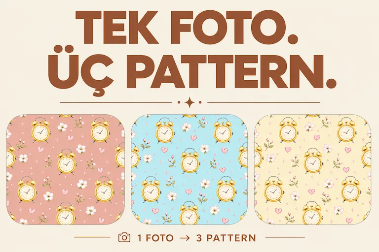

MAKALELER
İçgörüler & Rehberler
AI, pattern tasarımı, microstock, üretkenlik ve yaratıcı iş akışları hakkında makaleleri keşfedin.

Bir Saat Fotoğrafını Yapay Zekâ ile Nasıl Tam Bir Pattern Koleksiyonuna Dönüştürdüm
Tek bir saat fotoğrafıyla başlayıp yapay zekâ kullanarak nasıl bir pattern koleksiyonuna dönüştürdüğümü keşfedin.
Makaleyi Oku →
Yeni Başlayanlar İçin AI ile Seamless Pattern Nasıl Yapılır?
Telefon galerinizdeki basit bir fotoğrafı AI kullanarak seamless pattern'e dönüştürmeyi ve bunu dijital bir varlığa geliştirmeyi öğrenin.
Makaleyi Oku →